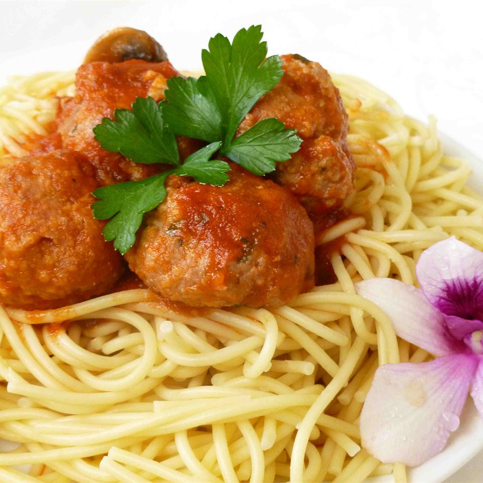

Spaghetti

Description
Spaghetti and meatballs, what's not to love? Spaghetti and meatballs has to be one of the most fun dishes ever invented, at least from a kid's perspective.
Mounds of spaghetti, fork twirling strands in a spoon, tasty meatballs, even the very serving of the spaghetti, trying to lift just the right amount from the bowl — these are some of my favorite memories from childhood.
Ingredients
- 1 pound ground beef (at least 16% fat)
- 1/2 pound fresh bulk Italian style pork sausage
- 2 large eggs
- 3/4 cup unseasoned breadcrumbs
- 1/4 cup grated Parmesan-Romano cheese blend
- 1 tablespoon extra virgin olive oil
- 1 1/2 pounds spaghetti
Steps
- Prepare the sauce.
- In a large bowl, mix by hand the beef, Italian sausage, basil, parsley, mushrooms, eggs, breadcrumbs, cheese, salt, and pepper. Do not over-mix or the meatballs will be tough.
- In a separate wide, shallow pan, heat the olive oil on medium high heat. Brown meat balls on all sides, about 2 to 3 minutes.
- Add the red wine to the sauce and stir in the cheese. Add salt to taste. Add meatballs and gently stir. Simmer the sauce and meatballs for 30 to 45 minutes, stirring occasionally.
- Cook the spaghetti for 10 minutes. Drain.
- To serve, place thin layer of sauce on plate, add pasta, add sauce and meatballs, and then sprinkle with grated Parmesan-Romano cheese.